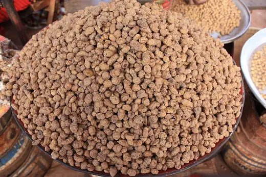

Root or shoot · Sep–Oct
Chufa
Cyperus esculentus
Also called Chufa, Souchet comestible
Chufa is a root or shoot you can forage from September to October in Ontario and Quebec. Grass-like sedge with triangular stems and spikelets of golden flowers; tiny tubers on the roots.

When is chufa in season in Canada?
Chufa is usually in season September to October. Timing shifts with weather, latitude and altitude.
Where does chufa grow in Canada?
Chufa grows in Ontario, Quebec. Regions: Ontario, Quebec.
How do you recognise chufa?
Grass-like sedge with triangular stems and spikelets of golden flowers; tiny tubers on the roots.
How do you harvest chufa?
Only dig roots where you have the landowner's permission, since uprooting wild plants is illegal in many places. Take a few from a large patch and backfill the hole.
How do you eat chufa?
Tubers ('tiger nuts') soaked and eaten raw, or blended into horchata.
How do you store chufa?
Dry tubers.
What is chufa good for?
Calories, Fat.